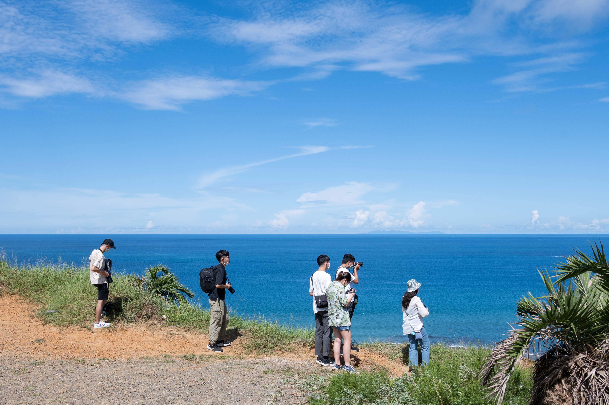

旅遊記憶
澎湖幹部遊 2019.08.31 - 09.04
那年仲夏，與攝影社幹部一起到澎湖沐浴陽光的那些日子
出發那天是個晴朗的好日子，用完午餐，我們下午才搭上立榮航空的飛機從松山機場出發。這是我第一次坐70人左右的小飛機，過往只有搭乘輕航機的經驗，原本以為這類往返臺灣本島與澎湖的小飛機會穩很多，然而因為炎炎夏日地面炎熱，午後上升氣流強烈，這架班機依然搖搖晃晃。降落到馬公機場後...（see more）
")
高屏行 2021.08.18 - 08.22
暑假之中，跟一群朋友經歷的一場快樂回憶
小小讀書會最後一個活動，當時原本預計是要去澎湖五天四夜，然而忘了是遇到颱風還是疫情加劇，總之飛機不飛了，使得我們只好臨時啟用備案，驅車前往恆春半島。恆春半島位於臺灣本島最南處，三面環海時期別具熱帶島嶼風情...（see more）

二林實地考察 2021.09.05 - 09.06
浪漫酒比特🍷💋～二林出任務！
測試中測試中測試中

蘭嶼小旅行 2022.08.23 - 08.26
輕鬆愉悅的一次發呆離島旅行
測試中測試中測試中

二零二五機車環島 2025.01.02 - 01.08
一人一車，冬天？照樣環島的啦！
秋風颯爽的十一月夜晚，我坐在PU廣場旁的板凳上，耳邊迴繞著區隊長的碎碎念，心中卻突然閃過一股熱血的渴望：「一月的我，何不來場環島獨旅呢？」這念頭在往後如一縷曙光撕裂了單調的迷彩生活...（see more）
清腸道的P人宜蘭行 2025.02.07 - 02.08
去哪裡？不知道欸，的輕鬆小聚
從青春痘正式啟程，我們開始了一場漫無目的的旅程，「去哪裡不知道，先出來就對了。」是我們這次旅行的主軸。絕美的風景、與風同行的日子，不是這場旅行的追求，這是一場心靈的淬鍊，一場與自由的重逢，自由到不知道下下個行程在哪裡的放鬆小旅行...（see more）